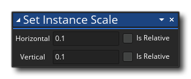
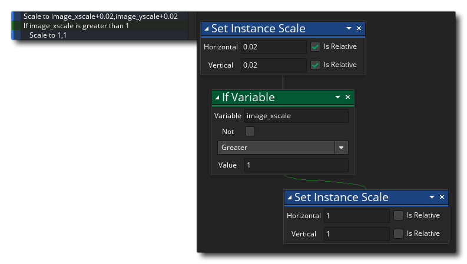
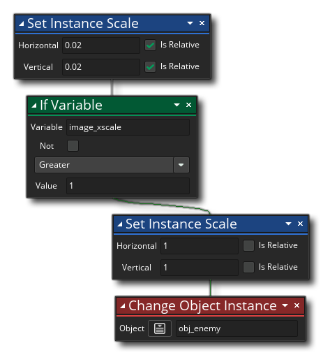
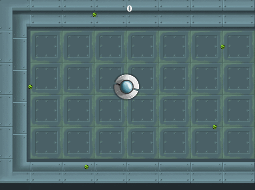

We need to create a new object for the spawner so do that now (click  on the Object resource folder and select Create), and name this object obj_enemyspawn. Assign the object the enemy sprite too (spr_enemy), as what we are going to do is make our enemies "grow" in size and then spawn, so that the player has a visual cue that the spawner is there and that an enemy is coming and they can move out of the way and prepare. Having an enemy just appear out of nowhere would be unfair and annoying to the player!
on the Object resource folder and select Create), and name this object obj_enemyspawn. Assign the object the enemy sprite too (spr_enemy), as what we are going to do is make our enemies "grow" in size and then spawn, so that the player has a visual cue that the spawner is there and that an enemy is coming and they can move out of the way and prepare. Having an enemy just appear out of nowhere would be unfair and annoying to the player!
We now need to add the action Set Instance Scale (from the Instances library) into the Create Event of the object. So add the event now and the action, with the following values: 
What we are doing is setting the built in variables for the assigned sprite scale to 10% of the base scale. GameMaker Studio 2 bases all the scale on factors, where a factor of 1 is 1:1 with the original sprite image, so a factor of 1.5 is 150% bigger and a factor of 0.5 would be 50% smaller. So, here we are setting the scaling factor to be 0.1 (10%) and then we are going to scale the image up to 1 (100%) before spawning the enemy.
To actually scale it up we need to use the Step Event, so add that now. We will use the same approach to scaling that we used previously for the image_alpha, so add the Set Instance Scale action and then we'll do an If Variable... check on it: 
This will scale up the image xscale and image yscale by 0.02 every game frame (note that the relative check-box is marked) and then it will check the value of the image_xscale variable to see if it is greater than 1 and if it is it sets the scale to 1. That's fine but we need to add one final action which we've not see before... The Change Object Instance action. We'll use this to change the calling instance (the spawner) into an enemy instance, so drag that into the action list now and set it to change into the object obj_enemy, like this: 
So, first we check to see if the scale is 1 (100%) and if it is we change the instance into a version of the instance obj_enemy using the action Change Object Instance .
With that done, you can go back to the game room and on the new EnemyLayer layer add five or six instances of the object (click  on the obj_enemyspawn object in the resource tree and then drag it into the editor window and release the mouse button). When ready, click the Play button
on the obj_enemyspawn object in the resource tree and then drag it into the editor window and release the mouse button). When ready, click the Play button  to test your game and you should see that the enemies now scale into existence.
to test your game and you should see that the enemies now scale into existence.
